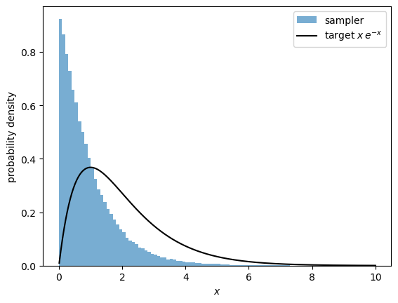

Lab 10: Auditing AI-Generated Numerical Code#
The AI use appendix on your assignments asks what the tool got wrong and how you caught it. Today we practice the second half: catching it.
The three functions below were written with an AI coding assistant from the prompts shown, and then seeded with mistakes of the kind these tools often make. Each function has at least one mistake. Every one of them runs without errors and returns numbers that look reasonable.
Your goal is not only to find the mistakes, but to find tests that would have exposed them if no one had told you they were there. Work with a partner, and keep an audit log as you go (template at the end).
An auditing checklist#
Known answer. Run the code on a problem you can solve exactly.
Invariants. Check normalization, symmetries, conservation laws, and detailed balance.
Limits. Check \(\Delta x \to 0\), \(T \to 0\) and \(T \to \infty\), and more samples.
Bookkeeping. What is counted, stored, and averaged: every step, or only some?
Edges. Look at boundaries, signs, indices, and off-by-one errors.
One fix at a time. Re-test after every fix: a second mistake can hide behind the first.
import itertools
import matplotlib.pyplot as plt
import numpy as np
Part 1: Eigenstates of a 1D Hamiltonian (about 15 minutes)#
The prompt given to the assistant:
Write a Python function that returns the k lowest energy eigenvalues and the normalized eigenfunctions of \(H = -\frac{1}{2}\frac{d^2}{dx^2} + V(x)\) on a grid of \(N_D + 1\) points from \(-L/2\) to \(L/2\), using finite differences.
def lowest_states(V, L=8.0, ND=600, k=4):
# Grid and spacing
x = np.linspace(-L / 2, L / 2, ND + 1)
dx = x[1] - x[0]
# Finite-difference Hamiltonian: kinetic term from the three-point stencil, plus V on the diagonal
main = 1.0 / dx**2 + V(x)
off = -0.5 / dx**2 * np.ones(ND)
H = np.diag(main) + np.diag(off, 1) + np.diag(off, -1)
# Solve the eigenvalue problem and keep the lowest k states
E, v = np.linalg.eig(H)
return E[:k], v[:, :k], x
E, phi, x = lowest_states(lambda x: 0.5 * x**2)
print("E =", E)
E = [10912.33458734 10922.31829471 10932.15780338 10941.85284499]
Tasks
What should
Ebe for the harmonic oscillator, \(V(x) = \frac12 x^2\)? Does it match?The function promises normalized eigenfunctions. Check \(\int |\phi_n(x)|^2\, dx\).
Find and fix the mistakes, then run tests 1 and 2 again.
# Your tests and your fixed version here
Part 2: Sampling a positive variable (about 25 minutes)#
The prompt given to the assistant:
Write a Metropolis sampler for a positive variable \(x\) with probability density \(p(x) \propto e^{-U(x)}\). Since \(x\) must stay positive, propose multiplicative steps \(x' = x\, e^{\sigma z}\) with \(z\) a standard normal random number. Return the chain and the acceptance rate.
def metropolis_positive(U, x0=1.0, sigma=0.5, n_steps=200_000, seed=0):
rng = np.random.default_rng(seed)
x = x0
samples = []
accepted = 0
for _ in range(n_steps):
# Multiplicative proposal keeps x positive
x_new = x * np.exp(sigma * rng.normal())
# Metropolis acceptance
if rng.random() < np.exp(U(x) - U(x_new)):
x = x_new
samples.append(x)
accepted += 1
return np.array(samples), accepted / n_steps
We test it on \(p(x) \propto x\, e^{-x}\) for \(x > 0\) (a Gamma distribution), i.e., \(U(x) = x - \ln x\), for which \(\langle x\rangle = 2\) and \(\mathrm{Var}(x) = 2\).
samples, acceptance = metropolis_positive(lambda x: x - np.log(x))
print(f"{len(samples)} samples, <x> = {samples.mean():.3f}, Var(x) = {samples.var():.3f}, acceptance = {acceptance:.2f}")
xs = np.linspace(0.01, 10, 400)
plt.hist(samples, bins=100, range=(0, 10), density=True, alpha=0.6, label="sampler")
plt.plot(xs, xs * np.exp(-xs), "k", label=r"target $x\,e^{-x}$")
plt.xlabel("$x$")
plt.ylabel("probability density")
plt.legend()
plt.show()
171125 samples, <x> = 0.952, Var(x) = 0.869, acceptance = 0.86

Tasks
Compare \(\langle x\rangle\), \(\mathrm{Var}(x)\), and the histogram with the exact answers. How many samples did the chain return, and how many steps did it take?
As in today’s lecture, this proposal is not symmetric. The density of \(x' = x\,e^{\sigma z}\) is $\(q(x'|x) = \frac{1}{x'\sigma\sqrt{2\pi}}\exp\left[-\frac{(\ln x' - \ln x)^2}{2\sigma^2}\right].\)\( Compute the ratio \)q(x|x’)/q(x’|x)$. What should the acceptance probability be?
Fix the mistakes one at a time, re-running the test after each. How large is the error from each mistake on its own? Which one would you have noticed without knowing the exact answer?
# Your tests and your fixed version here
Part 3: The 2D Ising model (about 25 minutes)#
The prompt given to the assistant:
Write a Metropolis simulation of the 2D Ising model with \(J = k_\mathrm{B} = 1\) and periodic boundary conditions on an \(L \times L\) lattice. Use single-spin flips, and return the absolute magnetization per spin and the energy per spin after each sweep.
The energy function below was written separately; you may treat it as correct.
def energy(s):
# E = -sum over nearest-neighbor pairs s_i s_j, each pair counted once (periodic boundaries)
return -np.sum(s * (np.roll(s, 1, axis=0) + np.roll(s, 1, axis=1)))
def ising_metropolis(L=3, T=2.0, n_sweeps=20_000, seed=0):
rng = np.random.default_rng(seed)
s = rng.choice([-1, 1], size=(L, L))
m_series, e_series = [], []
for sweep in range(n_sweeps):
for _ in range(L * L):
i, j = rng.integers(0, L, size=2)
s[i, j] *= -1 # trial flip
neighbors = s[(i + 1) % L, j] + s[i - 1, j] + s[i, (j + 1) % L] + s[i, j - 1]
dE = -s[i, j] * neighbors # energy change of the flip
if dE > 0 and rng.random() > np.exp(-dE / T):
pass # rejected
m_series.append(abs(s.mean()))
e_series.append(energy(s) / (L * L))
return np.array(m_series), np.array(e_series)
m, e = ising_metropolis(L=3, T=2.0)
burn = 1000
print(f"L = 3, T = 2: <|m|> = {m[burn:].mean():.3f}, <e> = {e[burn:].mean():.3f}")
L = 3, T = 2: <|m|> = 0.270, <e> = 0.006
Tasks
A \(3 \times 3\) lattice has only \(2^9 = 512\) configurations, so you can compute \(\langle |m|\rangle\) and \(\langle e\rangle\) exactly by summing over all of them with Boltzmann weights. Write that function and compare. (Hint:
itertools.product([-1, 1], repeat=9)loops over all configurations.)Compare with your exact answers at other temperatures, including very high and very low \(T\). Which temperature does the simulation seem to be at?
Fix the mistakes one at a time, re-testing after each. What does each fix change?
# Your exact enumeration, tests, and fixed version here
Part 4: Ask an AI to review the code (about 10 minutes)#
Give one of the original functions above to an AI assistant and ask it to review the code for errors, without telling it what is wrong.
Which mistakes does it find?
Does it miss any, or report problems that are not there?
Would its review have been enough without your tests?
Audit log#
Fill in one row per mistake. We will compare logs at the end of the lab; the same kind of record belongs in the AI use appendix of your assignments.
Function |
Symptom |
Test that exposed it |
Fix |
Would you have caught it without that test? |
|---|---|---|---|---|